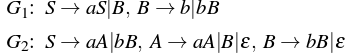
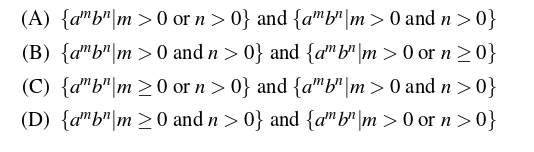

Relationship between grammar and language
A grammar is a set of production rules which are used to generate strings of a language. In this article, we have discussed how to find the language generated by a grammar and vice versa as well.
Language generated by a grammar –
Given a grammar G, its corresponding language L(G) represents the set of all strings generated from G. Consider the following grammar,
G: S-> aSb|ε
In this grammar, using S-> ε, we can generate ε. Therefore, ε is part of L(G). Similarly, using S=>aSb=>ab, ab is generated. Similarly, aabb can also be generated.
Therefore,
L(G) = {anbn, n>=0}
In language L(G) discussed above, the condition n = 0 is taken to accept ε.
Key Points –
- For a given grammar G, its corresponding language L(G) is unique.
- The language L(G) corresponding to grammar G must contain all strings which can be generated from G.
- The language L(G) corresponding to grammar G must not contain any string which can not be generated from G.
Que-1. Consider the grammar: (GATE-CS-2009)
S -> aSa|bSb|a|b
The language generated by the above grammar over the alphabet {a,b} is the set of:
(A) All palindromes
(B) All odd length palindromes.
(C) Strings that begin and end with the same symbol
(D) All even length palindromes
Solution: Using S->a and S->b, a and b can be generated. Similarly using S=>aSa=>aba, aba can be generated. Other strings which can be generated from grammar are: a, b, aba, bab, aaa, bbb, ababa, …
Therefore, option (B) is correct.
Que-2. Consider the following context-free grammars: (GATE-CS-2016)

Which one of the following pairs of languages is generated by G1 and G2, respectively?

Solution: Consider the grammar G1:
Using S=>B=>b, b can be generated.
Using S=>B=>bB, bb can be generated.
Using S=>aS=>aB=>ab can be generated.
Using S=>aS=>aB=>abB=>abb can be generated.
As we can see, number of a’s can be zero or more but number of b is always greater than zero.
Therefore,
L(G1) = {ambn| m>=0 and n>0}
Consider the grammar G2:
Using S=>aA=>a, a can be generated.
Using S=>bB=>b, b can be generated.
Using S=>aA=>aaA=>aa can be generated.
Using S=>bB=>bbB=>bb can be generated.
Using S=>aA=>aB=>abB=>abb can be generated.
As we can see, either a or b must be greater than 0.
Therefore,
L(G2) = {ambn| m>0 or n>0}
Grammar generating a given language –
Given a language L(G), its corresponding grammar G represents the production rules which produces L(G). Consider the language L(G):
L(G) = {anbn, n>=0}
The language L(G) is set of strings ε, ab, aabb, aaabbb….
For ε string in L(G), the production rule can be S->ε.
For other strings in L(G), the production rule can be S->aSb|ε.
Therefore, grammar G corresponding to L(G) is:
S->aSb| ε
Key Points –
1.For a given language L(G), there can be more than one grammar which can produce L(G).
2.The grammar G corresponding to language L(G) must generate all possible strings of L(G).
3.The grammar G corresponding to language L(G) must not generate any string which is not part of L(G).